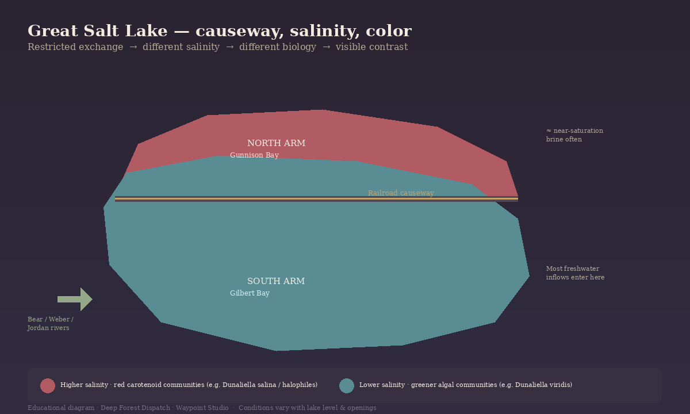
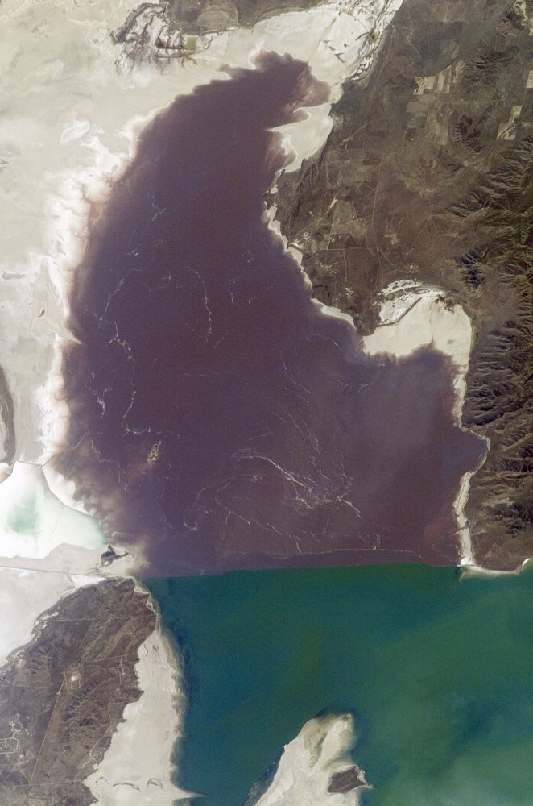

A hard line across the water
The Great Salt Lake does not gently fade from one color into another. On many clear days the change is abrupt: pink to red on one side of a thin east–west seam, greener or blue-green on the other.
That seam is a rock-fill railroad causeway, finished in 1959. It did not paint the lake. It changed how water and salt move — and biology followed.

A closed basin in northern Utah
This is a shallow terminal lake: rivers, rain, and groundwater arrive; almost nothing flows out except by evaporation. It is a remnant of Ice Age Lake Bonneville. Salt has nowhere else to go.
Today’s main body is usually described as a north arm (Gunnison Bay) and a south arm (Gilbert Bay), split by the causeway that still carries rail across the lake.
Restricted exchange, uneven freshwater
Before the rock-fill causeway, the lake mixed more freely. After 1959, the two arms stayed connected only through limited openings — historically culverts and porous fill, later engineered breaches and a bridge span. Exchange continued, but under constraint.
Freshwater does not arrive evenly. The Bear, Weber, and Jordan rivers deliver most streamflow into the south arm. The north receives far less direct freshwater and concentrates salt. USGS and Utah Geological Survey accounts treat that imbalance — not shoreline cosmetics — as the driver of the modern salinity split.
Salinity selects the biology — and the color
The north arm commonly sits at much higher salinity, often near halite saturation. The south remains hypersaline by ocean standards, but typically far less extreme. Multi-decadal studies report averages on the order of roughly 300+ g/L in the north versus much lower values in the south — numbers that move with lake level, season, and how open the causeway connections are. Treat them as evidence of a persistent gradient, not a barcode.
Salinity selects what can live. In the hypersaline north, salt-tolerant communities — including the alga Dunaliella salina and halophilic archaea such as Halobacterium — can dominate; red carotenoid pigments help the water read pink to red. In the south, greener algal communities (often including Dunaliella viridis) are more typical. Brine shrimp and brine flies belong to the same salinity-shaped food web, especially south of the causeway.

Physical first: causeway → restricted exchange → salinity divergence → different communities → visible contrast. Microbes finish the story; they do not replace it.
Not permanent paint
Lake level rises and falls with climate and water use. Culverts have closed; openings and a bridge have changed exchange. Salt crusts thicken and dissolve. Blooms wax and wane. Some years look like a hard two-tone flag; others look softer or shifted.
The causeway still structures the system. The exact pigments are weather and management written on water — durable divide, variable appearance.